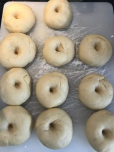

<?xml version="1.0" encoding="UTF-8"?><rss version="2.0"
	xmlns:content="http://purl.org/rss/1.0/modules/content/"
	xmlns:wfw="http://wellformedweb.org/CommentAPI/"
	xmlns:dc="http://purl.org/dc/elements/1.1/"
	xmlns:atom="http://www.w3.org/2005/Atom"
	xmlns:sy="http://purl.org/rss/1.0/modules/syndication/"
	xmlns:slash="http://purl.org/rss/1.0/modules/slash/"
	>

<channel>
	<title>Yeast Dough &#8211; Levia Wegner</title>
	<atom:link href="" rel="self" type="application/rss+xml" />
	<link>../../../index.html</link>
	<description>Baking &#38; Happiness</description>
	<lastBuildDate>Sat, 06 Sep 2025 21:37:38 +0000</lastBuildDate>
	<language>en-US</language>
	<sy:updatePeriod>
	hourly	</sy:updatePeriod>
	<sy:updateFrequency>
	1	</sy:updateFrequency>
	<generator>https://wordpress.org/?v=6.8.2</generator>

<image>
	<url>../../../wp-content/uploads/2021/06/Levia-L2-150x150.png</url>
	<title>Yeast Dough &#8211; Levia Wegner</title>
	<link>../../../index.html</link>
	<width>32</width>
	<height>32</height>
</image> 
	<item>
		<title>Pumpkin Buns</title>
		<link>../../../pumpkin-buns/index.html</link>
		
		<dc:creator><![CDATA[Levia Lydia Wegner]]></dc:creator>
		<pubDate>Mon, 28 Oct 2024 11:01:42 +0000</pubDate>
				<category><![CDATA[Bread]]></category>
		<category><![CDATA[Savoury]]></category>
		<category><![CDATA[Yeast Dough]]></category>
		<guid isPermaLink="false">https://www.leviawegner.com/?p=1541</guid>

					<description><![CDATA[These savoury pumpkin buns are the perfect side for any fall meal! They’re rich in flavour and airy, best served with some butter or cream cheese.]]></description>
										<content:encoded><![CDATA[<p>Fall has arrived and everyone knows what that means! It is the season of rainy days, Halloween and pumpkin spice. While in some countries getting at the typical orange pumpkins may be hard, this recipe works perfectly well with butternut squash and other roasted gourds. I, for one, used butternut squash and Neapolitan squash. Often, pumpkin is accompanied by the signature blend of spices classified as &#8220;pumpkin spice&#8221;. While many such recipes are sweet, these particular buns are actually rather savoury. The seasonings added to the roasted pumpkin give the buns a light saltiness and combine well with the spices to create a deep and rich flavour.</p>
<p>Here is the recipe. Bake and enjoy!</p>
<p>## Recipe</p>
<p>### **Tools**</p>
<p>This recipe requires kitchen twine (unbleached cotton) to shape the buns.</p>
<p>A pastry brush will be helpful for applying the egg-wash.</p>
<p>### Ingredients</p>
<p>For the roasted pumpkin:</p>
<p> 	&#8211;<br />
1 small pumpkin</p>
<p> 	&#8211;<br />
1-2 Tbsp Olive oil</p>
<p> 	&#8211;<br />
Salt</p>
<p> 	&#8211;<br />
Honey</p>
<p>For the dough:</p>
<p> 	&#8211;<br />
360 g all-purpose flour</p>
<p> 	&#8211;<br />
2 tsp instant yeast</p>
<p> 	&#8211;<br />
50 g sugar</p>
<p> 	&#8211;<br />
1 tsp cinnamon</p>
<p> 	&#8211;<br />
1/4 tsp nutmeg</p>
<p> 	&#8211;<br />
1/4 tsp ground ginger</p>
<p> 	&#8211;<br />
120 ml warm milk</p>
<p> 	&#8211;<br />
60 g melted butter</p>
<p> 	&#8211;<br />
1 large egg (plus one extra for egg wash)</p>
<p>### Instructions</p>
<p> 	&#8211; Slice the pumpkin into even wedges and lay out on a baking tray. Drizzle with olive oil and season.</p>
<p> 	&#8211; Roast the pumpkin in the oven for 35-40 minutes or until soft enough to scrape the flesh from the skin.</p>
<p> 	&#8211; Purée the pumpkin using a blender and set aside 120g of the resulting purée for the dough.</p>
<p> 	&#8211; Preheat the oven to 190C.</p>
<p> 	&#8211; Combine the flour, sugar, instant yeast and spices.</p>
<p> 	&#8211; Mix the milk, butter, egg and purée until combined. Make sure the butter is not hot.</p>
<p> 	&#8211; Pour the wet ingredients into the dry, mixing well to combine. This dough will require some kneading and you may have to add some more flour.</p>
<p> 	&#8211; Cover and let the dough rise for 1 hour or until doubled.</p>
<p> 	&#8211; Shape the buns using kitchen twine by carefully wrapping it around. You can also make simple round buns.</p>
<p> 	&#8211; Bake at 190C for 15-18min.</p>
<p> 	&#8211; Tap the bottom to know if they’re done. If they sound hollow, they are ready!</p>
<p> 	&#8211; Serve and enjoy!!</p>
<p>## Notes</p>
<p>A step by step reel can be found on my Instagram page, here: [@leviawegner.com](https://www.instagram.com/reel/DA_F3citshg/?utm_source=ig_web_copy_link&#038;igsh=MzRlODBiNWFlZA==)</p>
]]></content:encoded>
					
		
		
			</item>
		<item>
		<title>Dinner Rolls</title>
		<link>../../../__trashed/index.html</link>
		
		<dc:creator><![CDATA[Levia Lydia Wegner]]></dc:creator>
		<pubDate>Fri, 03 Sep 2021 18:59:42 +0000</pubDate>
				<category><![CDATA[Bread]]></category>
		<category><![CDATA[Yeast Dough]]></category>
		<category><![CDATA[North America]]></category>
		<category><![CDATA[Sweet]]></category>
		<category><![CDATA[USA]]></category>
		<guid isPermaLink="false">https://www.leviawegner.com/?p=419</guid>

					<description><![CDATA[An amazing treat to finalise your dinner? The perfect breakfast pastry? Well, this is the recipe for you. But don't take my name for it, try it yourself!]]></description>
										<content:encoded><![CDATA[<p>Despite the many rumours revolving around this pastry from the <strong>USA</strong>, there is one tale that is most widely accepted. Allegedly, a baker in Boston got mad and tossed a batch of unfinished rolls in the oven. You can imagine everyone&#8217;s surprise when the result was so absolutely delicious. Of course, dinner rolls can be enjoyed at any time of the day. Be it a roll with jam and butter for breakfast or a honey-topped roll for dinner.</p>
<h2>Recipe</h2>
<h3>Ingredients</h3>
<ul>
<li>240ml Soy Milk</li>
<li>1 package Fresh Yeast (notes)</li>
<li>2 Tbsp Sugar</li>
<li>60g Ghee</li>
<li>400g Wholegrain Flour</li>
<li>2 Eggs</li>
</ul>
<p>Topping</p>
<ul>
<li>2 Tbsp Ghee</li>
<li>1 Tbsp Honey</li>
</ul>
<h3>Instructions</h3>
<ol>
<li>Warm the soy milk and mix in the sugar.</li>
<li>Take the soy milk off the stove and crumble in the yeast. (notes)</li>
<li>Let the yeast proof for 10 minutes.</li>
<li>Rub the Ghee into the flour until obtaining a crumbly texture.</li>
<li>Crack one of the eggs into the flour and add in the yeast mixture.</li>
<li>Use a fork to stir until a dough starts to form.</li>
<li>Start kneading with your hands.</li>
<li>Tilt the dough onto a clean surface and keep kneading.</li>
<li>Leave the dough to rise for 30 minutes or until doubled in size.</li>
<li>Punch the dough down and divide it into about 14-16 pieces.</li>
<li>Place the rolls into a square glass tray and let them rise for about 15 minutes.</li>
<li>Preheat the oven to 180ºC.</li>
<li>Beat the egg with a fork before using a pastry brush to apply the egg-wash to the pastry.</li>
<li>Bake the rolls for 20-25 minutes or until golden on top.</li>
<li>Melt the butter and mix in the honey.</li>
<li>Separate the rolls from each other.</li>
<li>Brush with honey topping and enjoy!</li>
</ol>
<h3>Notes</h3>
<p class="p1">Fresh Yeast: When using fresh yeast, the package usually specifies the yeast to flour ratio. It can be different for different brands of yeast. The yeast I usually use comes in packages of 25g and is used for 500g of flour. If you prefer to use active dry yeast, check the back of the package. I usually use two packages of active dry yeast instead of one package of fresh yeast.</p>
<p class="p1">Yeast: First of all make sure the water is not too hot. It should not be burning. It should be merely warm not hot. If your yeast mixture is not puffy after you let it proof for five minutes, try leaving it for another five. If it still isn&#8217;t puffy, do not continue with that mixture!!! It will take less time to redo the yeast mixture and get it right than it will to remake the entire dough because it didn&#8217;t rise. Yeast is a tricky ingredient to work with and much can go wrong. This is a way of catching any mistakes early on and sparing yourself a lot of work.</p>
]]></content:encoded>
					
		
		
			</item>
		<item>
		<title>Sufganiyot</title>
		<link>../../../sufganiyot/index.html</link>
		
		<dc:creator><![CDATA[Levia Lydia Wegner]]></dc:creator>
		<pubDate>Mon, 30 Aug 2021 15:14:54 +0000</pubDate>
				<category><![CDATA[Sweetness]]></category>
		<category><![CDATA[Yeast Dough]]></category>
		<category><![CDATA[Asia]]></category>
		<category><![CDATA[Israel]]></category>
		<category><![CDATA[Sweet]]></category>
		<guid isPermaLink="false">https://www.leviawegner.com/?p=988</guid>

					<description><![CDATA[Sufganiyot or Sufganiyah (plural) are a delicious dessert that will have everyone's mouth watering. I can assure you, these will fill every little kid's "dessert stomach". Because we all know how much children pride themselves on always having space for sweets.]]></description>
										<content:encoded><![CDATA[<p>These jelly doughnuts are typical in <strong>Israel</strong>, however similar ones can be found across cultures. The german <em>Berliner</em> or the Spanish and Latin American <em>Buñuelos</em>. The Israeli version is actually derived from the german Berliner which used to be filled with meat rather than jams and jellies. It is only later that these yeast dough doughnuts were filled with jelly and covered with icing sugar. They taste absolutely amazing I can assure you. But, don&#8217;t take my word for it. Try it yourself!</p>
<h2>Recipe</h2>
<h3>Ingredients</h3>
<ul>
<li>50g Sugar</li>
<li>350g Flour</li>
<li>2 Eggs</li>
<li>25g Butter</li>
<li>1/2 tsp Nutmeg</li>
<li>2 tsp Salt</li>
<li>1 package Fresh Yeast (notes)</li>
<li>180ml Water</li>
<li>Oil for frying</li>
<li>A glass of strawberry or raspberry jam</li>
<li>60g Icing Sugar</li>
</ul>
<h3>Instructions</h3>
<ol>
<li>Heat the water until it is lukewarm.</li>
<li>Mix one teaspoon of the sugar into the water before crumbling the yeast into the water.</li>
<li>Set the yeast aside for 5 to 10 minutes to proof it. (notes)</li>
<li>Sift the sugar, flour, nutmeg and salt into a bowl.</li>
<li>Rub the butter into the dry ingredients.</li>
<li>Crack the eggs into the dry ingredients and pour in the yeast mixture.</li>
<li>Use a fork to mix everything together until the consistency is sticky enough to knead by hand.</li>
<li>When the dough is smooth, continue kneading it on a floured surface.</li>
<li>Leave the dough to rise for half and hour or until it is double its size.</li>
<li>Roll the dough out and use a round cookie cutter to cut out the doughnuts.</li>
<li>Don&#8217;t mix and roll the dough out too many times or it will get tough.</li>
<li>Leave the doughnuts to rise for another 15 minutes.</li>
<li>Heat the oil.</li>
<li>Fry the doughnuts from both sides until they are golden-brown.</li>
<li>Fill the jam into a piping bag with, preferably, a long nozzle.</li>
<li>Use the piping bag to fill the sufganiyah with whatever jam you like best.</li>
<li>Sift the icing sugar over the sufagniyah and they are ready to serve and enjoy.</li>
</ol>
<h3>Notes</h3>
<p class="p1">Fresh Yeast: When using fresh yeast, the package usually specifies the yeast to flour ratio. It can be different for different brands of yeast. The yeast I usually use comes in packages of 25g and is used for 500g of flour. If you prefer to use active dry yeast, check the back of the package. I usually use two packages of active dry yeast instead of one package of fresh yeast.</p>
<p class="p1">Deep Frying: You do not need any special equipment for deep drying. It is possible to just use a large pot filled with enough oil so the pastry is floating. You will be needing a ladle to pick the pastry out of the pot. The oil can be filtered after letting it cooled down. I usually use a coffee filter and store my oil in a closed bottle to later reuse when frying.</p>
<p class="p1">Yeast: First of all make sure the water is not too hot. It should not be burning. It should be merely warm not hot. If your yeast mixture is not puffy after you let it proof for five minutes, try leaving it for another five. If it still isn&#8217;t puffy, do not continue with that mixture!!! It will take less time to redo the yeast mixture and get it right than it will to remake the entire dough because it didn&#8217;t rise. Yeast is a tricky ingredient to work with and much can go wrong. This is a way of catching any mistakes early on and sparing yourself a lot of work.</p>
]]></content:encoded>
					
		
		
			</item>
		<item>
		<title>Malasadas</title>
		<link>../../../malasadas/index.html</link>
		
		<dc:creator><![CDATA[Levia Lydia Wegner]]></dc:creator>
		<pubDate>Thu, 26 Aug 2021 18:15:24 +0000</pubDate>
				<category><![CDATA[Sweetness]]></category>
		<category><![CDATA[Yeast Dough]]></category>
		<category><![CDATA[Hawaii]]></category>
		<category><![CDATA[North America]]></category>
		<category><![CDATA[Sweet]]></category>
		<guid isPermaLink="false">https://www.leviawegner.com/?p=905</guid>

					<description><![CDATA[If you are looking for a sweet snack, I've got you. This recipe makes absolutely delicious Malasadas. A type of Hawaiian donuts. Go ahead! Try it!]]></description>
										<content:encoded><![CDATA[<p>Picture the beautiful flowing hills and mountains of <strong>Hawaii</strong>. The beautiful beaches. But what of the culture? Nowadays, our knowledge of the Hawaiian culture is twisted by common misconceptions. For example, people born or living on the islands are not automatically Hawaiians. Hawaiians can trace their roots to the original inhabitants of the islands. Another common misunderstanding is that &#8216;Aloha&#8217; is equivalent to &#8216;Hello&#8217;. This is not in fact true as Aloha is more a way of life in general than a greeting and translates as &#8216;joyfully sharing life&#8217;. The frequently celebrated Luau&#8217;s are not in fact for the Hawaiians. They are not regularly celebrated by the residents.</p>
<p>When it comes to Hawaiian food, much of it is derived from recipes brought there by immigrants. Malasadas are believed to have first originated in Sao Miguel, an island in the Azores. They were later introduced in Hawaii and are now seen as a Hawaiian speciality. They are a common treat and can be found in most bakeries there. The name Malasadas means &#8220;poorly cooked&#8221;, which refers to the texture and crispy exterior of the pastry. It can be eaten with a custard filling or with ice cream, coated in sugar or not coated. It is easily adaptable to every person&#8217;s taste.</p>
<h2>Recipe</h2>
<h3>Ingredients</h3>
<ul>
<li>500g Flour</li>
<li>1 package Fresh Yeast (notes)</li>
<li>30ml Water</li>
<li>50g Sugar + 100g for coating</li>
<li>1tsp Salt</li>
<li>4 Eggs</li>
<li>60g Butter</li>
<li>Oil for frying</li>
<li>500ml Milk</li>
</ul>
<h3>Instructions</h3>
<ol>
<li>Warm the water and mix in a teaspoon of sugar, then crumble ibn the yeast.</li>
<li>Leave the mixture to proof for 10 minutes.</li>
<li>Mix the flour, sugar and salt.</li>
<li>Rub the butter into the dry ingredients.</li>
<li>Heat the milk and beat the eggs.</li>
<li>Mix the milk, eggs and the yeast mixture into the flour.</li>
<li>Use a fork to mix the dough until it has the right consistency to kneed by hand.</li>
<li>Kneed the dough before transferring it onto a clean surface.</li>
<li>Keep kneeding until you obtain a smooth dough.</li>
<li>Leave the dough to rest for 30 minutes or until it is double in size.</li>
<li>Form the dough into balls before flattening it a bit and poking a hole in the middle.</li>
<li>Leave the dough to rise for another 15 minutes.</li>
<li>Heat the oil to 180ºC.</li>
<li>Fry the Malasadas until golden brown.</li>
<li>Remove them from the oil using a laddle.</li>
<li>Fill the sugar for coating in a ziplock bag and put the freshly fried Malasadas in.</li>
<li>Coat them sugar until fully covered before removing them from the bag and putting aside.</li>
<li>Repeat this process until all malasadas are covered in sugar.</li>
<li>Half them and eat with your favorite icecream or just like that.</li>
</ol>
<p>&nbsp;</p>
<h3>Notes</h3>
<p class="p1">Fresh Yeast: When using fresh yeast, the package usually specifies the yeast to flour ratio. It can be different for different brands of yeast. The yeast I usually use comes in packages of 25g and is used for 500g of flour. If you prefer to use active dry yeast, check the back of the package. I usually use two packages of active dry yeast instead of one package of fresh yeast.</p>
<p class="p1">Deep Frying: You do not need any special equipment for deep drying. It is possible to just use a large pot filled with enough oil so the pastry is floating. You will be needing a ladle to pick the pastry out of the pot. The oil can be filtered after letting it cooled down. I usually use a coffee filter and store my oil in a closed bottle to later reuse when frying.</p>
<p class="p1">Yeast: First of all make sure the water is not too hot. It should not be burning. It should be merely warm not hot. If your yeast mixture is not puffy after you let it proof for five minutes, try leaving it for another five. If it still isn&#8217;t puffy, do not continue with that mixture!!! It will take less time to redo the yeast mixture and get it right than it will to remake the entire dough because it didn&#8217;t rise. Yeast is a tricky ingredient to work with and much can go wrong. This is a way of catching any mistakes early on and sparing yourself a lot of work.</p>
<p>&nbsp;</p>
]]></content:encoded>
					
		
		
			</item>
		<item>
		<title>Puff-puff</title>
		<link>../../../puff-puff/index.html</link>
		
		<dc:creator><![CDATA[Levia Lydia Wegner]]></dc:creator>
		<pubDate>Tue, 17 Aug 2021 11:47:45 +0000</pubDate>
				<category><![CDATA[Sweetness]]></category>
		<category><![CDATA[Yeast Dough]]></category>
		<category><![CDATA[Africa]]></category>
		<category><![CDATA[Nigeria]]></category>
		<category><![CDATA[Sweet]]></category>
		<guid isPermaLink="false">https://www.leviawegner.com/?p=839</guid>

					<description><![CDATA[These crispy spheres with a bit of nutmeg flavor are the perfect snack. Whether you enjoy them with a dip, coated in sugar or pure, they carry an amazing flavour.]]></description>
										<content:encoded><![CDATA[<p>Food in <strong>Nigeria</strong> is often fried. So are these. These fried yeast-dough spheres are found in variations all over the African continent. For my collection I chose the Nigerian variety because the ingredients are so simple and pure. Rolled in sugar and served as is or with a freshly prepared strawberry dip this is the perfect soul-food snack.</p>
<h2>Recipe</h2>
<h3>Ingredients</h3>
<ul>
<li>250g Flour + extra for surface</li>
<li>300ml Water</li>
<li>1/2 package Fresh Yeast (notes)</li>
<li>1tsp Nutmeg</li>
<li>1/2 tsp Salt</li>
<li>50g Sugar + 1Tbs for yeast</li>
<li>Oil for deep frying (notes)</li>
</ul>
<h3>Instructions</h3>
<ol>
<li>Warm the water and stir in the sugar until disolved.</li>
<li>Crumble the yeast into the water and stir well.</li>
<li>Let the mixture proof for 5-10 minutes. (notes)</li>
<li>Sift the nutmeg, salt, sugar and flour into a large bowl.</li>
<li>Pour in the yeast mixture and stir with a fork until the texture thickens.</li>
<li>Start kneeding with your hands.</li>
<li>Tip the dough on a clean, slightly floured surface and continue kneeding until it is no longer sticky.</li>
<li>Leave the dough to rise for 30-60 minutes or until doubled in size.</li>
<li>Heat the oil and form little balls of dough before dropping them into the oil.</li>
<li>Stir them well so that they get a nice colour on all sides.</li>
<li>When the puffpuff are a golden-brown colour, use a ladle to remove them from the oil.</li>
<li>Place them on a piece of kitchen paper to soak up the oil.</li>
<li>Serve and Enjoy!</li>
</ol>
<h3>Notes</h3>
<p>Fresh Yeast: When using fresh yeast, the package usually specifies the yeast to flour ratio. It can be different for different brands of yeast. The yeast I usually use comes in packages of 25g and is used for 500g of flour. If you prefer to use active dry yeast, check the back of the package. I usually use two packages of active dry yeast instead of one package of fresh yeast.</p>
<p>Deep Frying: You do not need any special equipment for deep drying. It is possible to just use a large pot filled with enough oil so the pastry is floating. You will be needing a ladle to pick the pastry out of the pot. The oil can be filtered after letting it cooled down. I usually use a coffee filter and store my oil in a closed bottle to later reuse when frying.</p>
<p>Yeast: First of all make sure the water is not too hot. It should not be burning. It should be merely warm not hot. If your yeast mixture is not puffy after you let it proof for five minutes, try leaving it for another five. If it still isn&#8217;t puffy, do not continue with that mixture!!! It will take less time to redo the yeast mixture and get it right than it will to remake the entire dough because it didn&#8217;t rise. Yeast is a tricky ingredient to work with and much can go wrong. This is a way of catching any mistakes early on and sparing yourself a lot of work.</p>
]]></content:encoded>
					
		
		
			</item>
		<item>
		<title>Donuts</title>
		<link>../../../donuts/index.html</link>
		
		<dc:creator><![CDATA[Levia Lydia Wegner]]></dc:creator>
		<pubDate>Sun, 25 Jul 2021 13:56:39 +0000</pubDate>
				<category><![CDATA[Yeast Dough]]></category>
		<category><![CDATA[Africa]]></category>
		<category><![CDATA[Nigeria]]></category>
		<category><![CDATA[Sweet]]></category>
		<guid isPermaLink="false">https://www.leviawegner.com/?p=437</guid>

					<description><![CDATA[If you are tired of fast food but miss donuts, this is the recipe for you. Make your favorite treat in your very own kitchen!]]></description>
										<content:encoded><![CDATA[<p>Even though, these specific doughnuts are from <strong>Nigeria</strong>, donuts actually originated in the Netherlands. As far back as the 19th century, the Dutch have been making &#8220;olykoeks&#8221; or &#8220;oil cakes&#8221;. But even before that, doughnuts might have appeared in Asian cuisine. Even the Greeks and Roman fried dough and coated in sugar. Even the Arab&#8217;s had their variation of dough fritters. It seems all across the globe, people enjoyed (and still do) fried dough pastries. Be it coated in sugar or with chocolate or other toppings. It is no wonder, there is a variant made in Nigeria. Wherever they are from, doughnuts are a delicious snack.</p>
<h2>Recipe</h2>
<h3>Ingredients</h3>
<ul>
<li>400g All Purpose 0r Hard Flour</li>
<li>60g Sugar</li>
<li>65g Butter</li>
<li>120ml Evaporated Milk (at room temperature)</li>
<li>2 tsp Dry Yeast</li>
<li>1 tsp Salt</li>
<li>1 Egg Yolk</li>
<li>1 tsp Vanilla aroma</li>
<li>4Tbs Water</li>
</ul>
<h3>Instructions</h3>
<ol>
<li>Mix the flour, yeast, salt and sugar.</li>
<li>Use a fork to mix the yolk, the milk and the vanilla extract.</li>
<li>Use your fingers to incorporate the butter into the flour and mix until obtaining a crumbly texture.</li>
<li>Pour in the milk and use a spatula to stir.</li>
<li>When the dough has a thick enough consistency, gradually add water.</li>
<li>Knead the dough until it is smooth.</li>
<li>Let the dough rest for 30 minutes.</li>
<li>Roll the dough out on a floured surface until it is about 1/2 cm thick. Don&#8217;t make it too thin!</li>
<li>Use a donut cutter or a glass and a bottle cap to cut out your donuts.</li>
<li>Roll the rest of the dough into a ball and leave to rest for another 20 minutes or while you fry the first batch. (Try not to reuse the scraps too many times or your donuts will be rough.)</li>
<li>Heat up some sunflower oil in a pot and fry you dounuts until golden brown.</li>
<li>Place them shortly on some kitchen paper and then sift them in sugar.</li>
<li>Repeat this process with the donut middles.</li>
<li>Cut out the rest of the dough and cut squares and triangles out of the rest. (Check the notes and variations for further ideas)</li>
<li>Sift everything in sugar and enjoy!</li>
</ol>
<h3>Notes</h3>
<p>The centers as well as the squares and triangles can also be sifted in sugar or you can coat them in chocolate, honey or syrup. They can be served as their own pastry.</p>
]]></content:encoded>
					
		
		
			</item>
		<item>
		<title>Focaccia</title>
		<link>../../../focaccia/index.html</link>
		
		<dc:creator><![CDATA[Levia Lydia Wegner]]></dc:creator>
		<pubDate>Thu, 17 Jun 2021 16:45:51 +0000</pubDate>
				<category><![CDATA[Bread]]></category>
		<category><![CDATA[Savoury]]></category>
		<category><![CDATA[Yeast Dough]]></category>
		<category><![CDATA[Europe]]></category>
		<category><![CDATA[Italy]]></category>
		<guid isPermaLink="false">https://www.leviawegner.com/?p=402</guid>

					<description><![CDATA[Feel like eating something Italian but not in the mood for a huge, cheese-covered pizza? This recipe is simple and easy to follow and you will have the steaming bread on your plate in a jiffy!]]></description>
										<content:encoded><![CDATA[<h2>Destination</h2>
<p>Heading to Italy</p>
<h2>Overview</h2>
<p>Focaccia is a typical Italian recipe believed to have originated before the Roman Empire was formed. Some historians also hold the believe it originated in Ancient Greece. It is important to acknowledge that unrisen flat bread has also long been made throughout the Middle East. However, it can be confirmed that recipes similar to this one can be found in Turkey, France, Spain and Greece. It is also speculated to be the origin of pizza dough. Despite its rich history, it is an easily approachable recipe. It can be varied by adding toppings before baking or filling the finished bread with cheese or ham.</p>
<h2>Recipe</h2>
<h3>Ingredients</h3>
<ul>
<li><span style="font-weight: 400;">500g Flour</span></li>
<li><span style="font-weight: 400;">300ml Water</span></li>
<li><span style="font-weight: 400;">60ml Olive Oil (extra for greasing the pan and for the top)</span></li>
<li><span style="font-weight: 400;">2tsp Sugar</span></li>
<li>2tsp Salt</li>
<li>1package(25g) Fresh Yeast</li>
<li>Sea Salt and Rosemary</li>
</ul>
<h3>Instructions</h3>
<ol>
<li>In a metal bowl, warm the water until lukewarm and add the sugar. Take the water off the heat. Crumble the yeast into the water and mix well. Let the mixture set for 5-10 minutes to proof the yeast.</li>
<li>Put the flour in a large mixing bowl and add the salt on one side. Pour the yeast mixture on the other side. Try to make sure that yeast and salt don&#8217;t touch directly until it is totally unavoidable! Salt turns yeast off. Add the oil.</li>
<li>Use a fork to mix the mixture until you can knead it by hand. Knead until obtaining a smooth dough.</li>
<li>Cover the dough with a tea towel and let it to rise for 45 to 60 minutes.</li>
<li>When the dough has risen, oil a baking pan and tilt the dough into it. Spread the dough until it is about 2cm thick.</li>
<li>Make deep holes in the dough and fill them with a bit of rosemary. Sprinkle the focaccia with salt and cover it with a tea towel. Leave to rise for another 20 minutes.</li>
<li>When the dough has finished rising, sprinkle a bit of oil over it.</li>
<li>Bake the focaccia on 200ºC for 20 minutes or until golden.</li>
<li>Cut and serve warm with a bit of olive oil and salt.</li>
</ol>
<h3>Variations</h3>
<p>Focaccia, being bread, can be eaten in a thousand and one ways. With ham and cheese filling or with tomatoes and olives intead of rosemary and salt on top. Anything you like can be added to it. It has a lot of room for your creativity and prefferences.</p>
<p>You can also vary the choice of flour. For example, you can use 250g of spelt flour and 250g of plain flour. That combination is nice with a cheese and onion topping or cherry tomatoes and black olives.</p>
]]></content:encoded>
					
		
		
			</item>
		<item>
		<title>Apple Rolls</title>
		<link>../../../apple-rolls/index.html</link>
		
		<dc:creator><![CDATA[Levia Lydia Wegner]]></dc:creator>
		<pubDate>Mon, 07 Jun 2021 15:29:07 +0000</pubDate>
				<category><![CDATA[Yeast Dough]]></category>
		<category><![CDATA[Europe]]></category>
		<category><![CDATA[Germany]]></category>
		<category><![CDATA[Sweet]]></category>
		<guid isPermaLink="false">https://www.leviawegner.com/?p=138</guid>

					<description><![CDATA[Are you feeling like travelling to Germany without leaving your own kitchen? These delicious apple rolls are exactly what you need. Spiced with a bit of cinnamon or filled with plums or raisins, they can easily be adapted to fit everyones likes.]]></description>
										<content:encoded><![CDATA[<h2>Destination</h2>
<p>Heading to <em><strong>Germany</strong></em></p>
<h2>Overview</h2>
<p>Apple Rolls are pretty similar to cinnamon rolls when it comes to the dough but they differ in the filling. There are many ways to give this recipe a personal twist. Apfel-Rosinen-Schnecken are typically eaten in Germany. They are made with yeast dough and apple compot. Yeast dough is quite tricky when getting started but it becomes easier and even fun to make it the more times you do it.</p>
<h2>Recipe</h2>
<h3>Ingredients</h3>
<p>For the dough</p>
<ul>
<li>500g Flour</li>
<li>250ml Milk</li>
<li>75g Butter</li>
<li>25g fresh Yeast</li>
<li>70g Sugar</li>
<li>1 package Vanilla Sugar</li>
<li>pinch of Salt</li>
</ul>
<p>For the filling</p>
<ul>
<li>500g of Apples (5 small apples)</li>
<li>100g of Brown Sugar</li>
<li>optional: Cinnamon, Raisins, Plums</li>
</ul>
<p>For the topping</p>
<ul>
<li>64g Powdered Sugar</li>
<li>1Tbsp Milk</li>
</ul>
<h3>Instructions</h3>
<p>1- Cut the apples and place them on a baking tray covering them with the sugar, leaving them to soak.</p>
<p>2- Warm the milk and place the butter inside. When melted, add sugar, vanilla sugar and a pinch of salt.</p>
<p>3- Remove the mixture from the heat and crumble the fresh yeast, adding it to the mixture and stirring thoroughly.</p>
<p>4- Add the milk-yeast mixture to the flour and knead it until obtaining a homogenous dough.</p>
<p>5- Cover the dough and let it rise for 45 minutes.</p>
<p>6- Cover a large area with flour and roll out the dough forming a rectangle.</p>
<p>7- Blend the apples until obtaining a consisten compot.</p>
<p>8- Spread the compot on the dough.</p>
<p>9- Roll up the dough and cut it into 4cm thick rolls.</p>
<p>10- Place the rolls on the baking tray with the cut side up.</p>
<p>11- Cover the tray and let the rolls rise for another 30 minutes.</p>
<p>12- Heat the oven to 250ºC and bake the apple rolls for 10 to 15 minutes.</p>
<p>11- Mix the powdered sugar with the milk and spread it over the apple rolls.</p>
<h3>Variations</h3>
<p>Cinnamon- Looking to spice the apple compot with cinnamon? No problem. Sprinkle some cinnamon on the apples before leaving them to soak.</p>
<p>Raisins &#8211; Raisins and Apples go hand in hand in many recipes. I haven&#8217;t included them in the recipe itself but you can add them into the apple compot before spreading it on the dough.</p>
<p>Plums &#8211; If you want to add a plum centre, align plums on the side from which you will roll up the dough. That way, your apple rolls will have a nice plum centre.</p>
]]></content:encoded>
					
		
		
			</item>
		<item>
		<title>Cinnamon Rolls</title>
		<link>../../../cinnamon-rolls/index.html</link>
		
		<dc:creator><![CDATA[Levia Lydia Wegner]]></dc:creator>
		<pubDate>Mon, 07 Jun 2021 09:43:45 +0000</pubDate>
				<category><![CDATA[Yeast Dough]]></category>
		<category><![CDATA[Sweet]]></category>
		<category><![CDATA[USA]]></category>
		<guid isPermaLink="false">https://www.leviawegner.com/?p=76</guid>

					<description><![CDATA[Cinnamon rolls are so delicious and easily available in nearly all bakeries in the USA. Everyone knows this pastry or has at least heard of it. But, with this recipe, you can have this treat at home right in your very own kitchen. ]]></description>
										<content:encoded><![CDATA[<h2>Destination</h2>
<p>Heading to the <em><strong>USA</strong></em></p>
<h2>Overview</h2>
<p>This sweet is commonly regarded as a typical USA breakfast pastry, however, cinnamon rolls are believed to be origianlly from Sweden. The swedish cinnamon rolls are lighter and less sweet than the well-known american version. On the 4th of Octobre, Sweden celebrates the National Cinnamon Bun day. This treat is also often discussed in the media as a simil due to its sweetness and the softness of the dough. The following recipe is for the USA version.</p>
<h2>Recipe</h2>
<h3>Ingredients</h3>
<p>For the dough</p>
<ul>
<li>500g Flour</li>
<li>250ml Milk</li>
<li>75g Butter</li>
<li>25g Fresh Yeast</li>
<li>70g Sugar</li>
<li>1 package Vanilla Sugar</li>
<li>pinch of Salt</li>
</ul>
<p>For the filling</p>
<ul>
<li>40g Butter</li>
<li>50g Sugar</li>
<li>1/2 Tbs Cinnamon</li>
</ul>
<p>For the topping</p>
<ul>
<li>64g Powdered Sugar</li>
<li>1Tbs Milk</li>
<li>1tsp Vanilla Extract</li>
</ul>
<h3>Instructions</h3>
<p>1- Warm the milk and place the butter inside. When melted, add sugar, vanilla sugar and a pinch of salt.</p>
<p>2- Remove the mixture from the heat and crumble the fresh yeast, adding it to the mixture and stirring thoroughly.</p>
<p>3- Add the milk-yeast mixture to the flour and knead it until obtaining a homogenous dough.</p>
<p>4- Cover the dough and let it rise for 45 minutes.</p>
<p>5- Cover a large area with flour and roll out the dough forming a rectangle.</p>
<p>6- Mix cinnamon and sugar together, spread the butter on the dough and spread the sugar-cinnamon mixture.</p>
<p>7- Roll up the dough from the short end.</p>
<p>8- Cut off 4cm thick pieces placing them on a baking tray with the cut side upward.</p>
<p>9- Cover the tray and let the cinnamon rolls rest another 30 minutes.</p>
<p>10- Warm the oven to 250ºC and bake the pastries for 10 to 15 minutes.</p>
<p>11- Mix the Powdered Sugar with the milk and the vanilla extract.</p>
<p>12- Spread the topping on the baked cinnamon rolls.</p>
<p>&nbsp;</p>
]]></content:encoded>
					
		
		
			</item>
	</channel>
</rss>

<!-- plugin=object-cache-pro client=phpredis metric#hits=896 metric#misses=4 metric#hit-ratio=99.6 metric#bytes=558026 metric#prefetches=85 metric#store-reads=20 metric#store-writes=3 metric#store-hits=94 metric#store-misses=1 metric#sql-queries=4 metric#ms-total=1273.96 metric#ms-cache=28.95 metric#ms-cache-avg=1.3157 metric#ms-cache-ratio=2.3 -->
